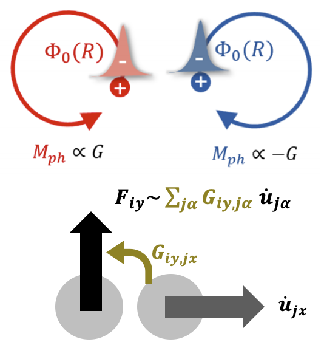
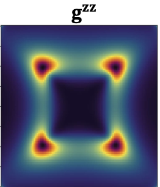
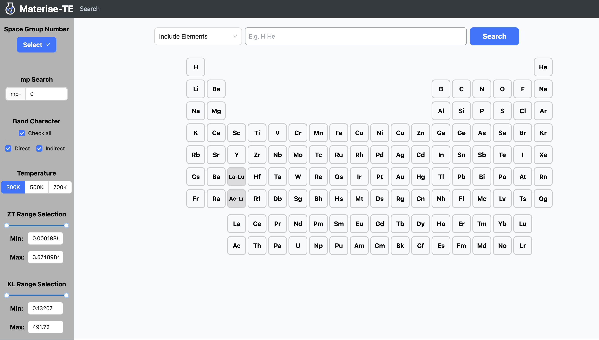

We develop numerical and first-principles tools for quantum materials, focusing on electronic and phononic transport properties, topological properties, and other quantum geometry-related calculations.

A DFT package for obtaining the molecular Berry curvature for quantum materials.
Problem: Accurate phonon spectra in magnetic materials, especially capturing the time-reversal symmetry and crystalline symmetry breaking induced by electronic orders.
Method: Density functional theory with wannier basis.
📄 Cite this work @ Sci. Adv. 12, aed7081 (2026)

Numerical solver for Quantum Geometry Tensor in Bosonic systems.
Problem: Direct probing the quantum geometric tensor for bosonic collective excitations.
Method: Dynamic structure factor + quantum geometric tensor reformalized in psedospin form.
📄 Cite this work @ arXiv:2601.13963

Thermoelectric semiconductor database: DFT-based discovery and experimental validation.
Problem: A DFT-based database for thermoelectric properties.
Method: high-throughput + DFT calculations
📄 Cite this work @ Phys. Rev. B 113, 205203 (2026)